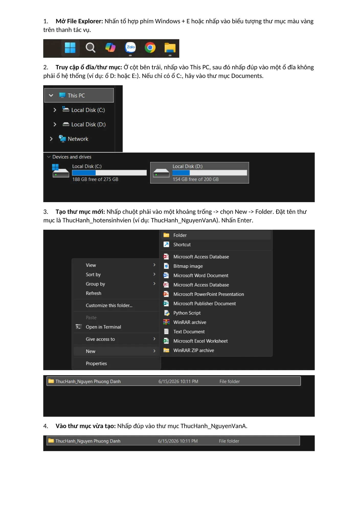
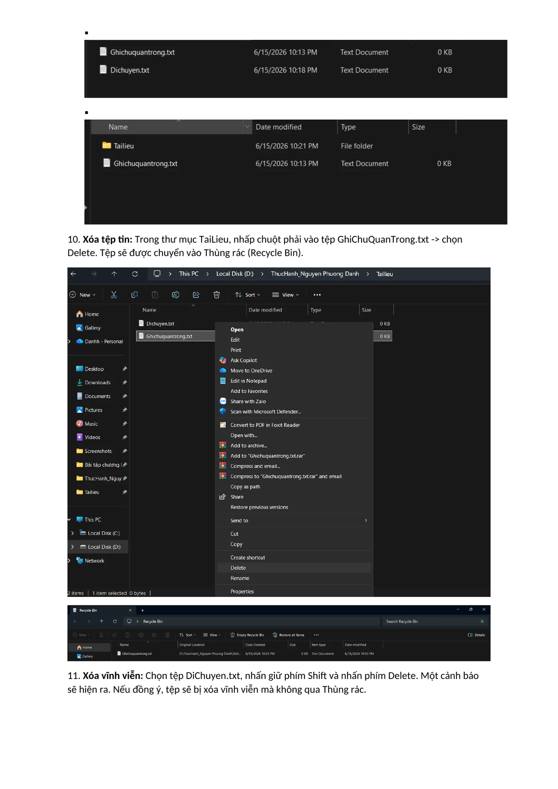

Năng lực cần hình thành
Làm quen với File Explorer và hình thành thói quen tổ chức dữ liệu có hệ thống, dễ tìm, dễ sao lưu và hạn chế nhầm lẫn.
Các bước thực hiện
Tạo không gian làm việc
Mở File Explorer, chọn vị trí lưu trữ và tạo thư mục ThucHanh_NguyenPhuongDanh.
Thực hành với tệp
Tạo GhiChu.txt, đổi thành GhiChuQuanTrong.txt và tạo thư mục con TaiLieu.
Phân biệt sao chép và di chuyển
Dùng Copy/Paste để tạo bản sao; dùng Cut/Paste để chuyển vị trí tệp.
Quản lý vòng đời tệp
Xóa vào Recycle Bin, xóa vĩnh viễn bằng Shift + Delete và thử khôi phục tệp.
Ảnh minh họa từ sản phẩm
Nhấn vào ảnh để xem kích thước lớn.


Những gì đạt được
- Thực hiện được 12 thao tác cơ bản trên tệp và thư mục.
- Phân biệt rõ Copy/Paste với Cut/Paste.
- Hiểu sự khác nhau giữa xóa thông thường và xóa vĩnh viễn.
- Biết kiểm tra lại cấu trúc lưu trữ sau khi thao tác.
Phân tích và hướng nâng cấp
Lý do của cấu trúc đặt tên
Thư mục gốc gắn với tên người thực hiện giúp nhận diện chủ sở hữu; thư mục con TaiLieu gom các tệp cùng mục đích; tên GhiChuQuanTrong mô tả trực tiếp chức năng của tệp. Nếu thực hiện lại, mình sẽ dùng quy tắc YYYYMMDD_LoaiNoiDung_PhiênBản để dễ sắp xếp theo thời gian và quản lý phiên bản.
Sản phẩm đầy đủ
Bản PDF bên dưới được chuyển trực tiếp từ báo cáo đã hoàn thành. Nếu trình duyệt không hiển thị khung xem trước, hãy dùng nút mở PDF.